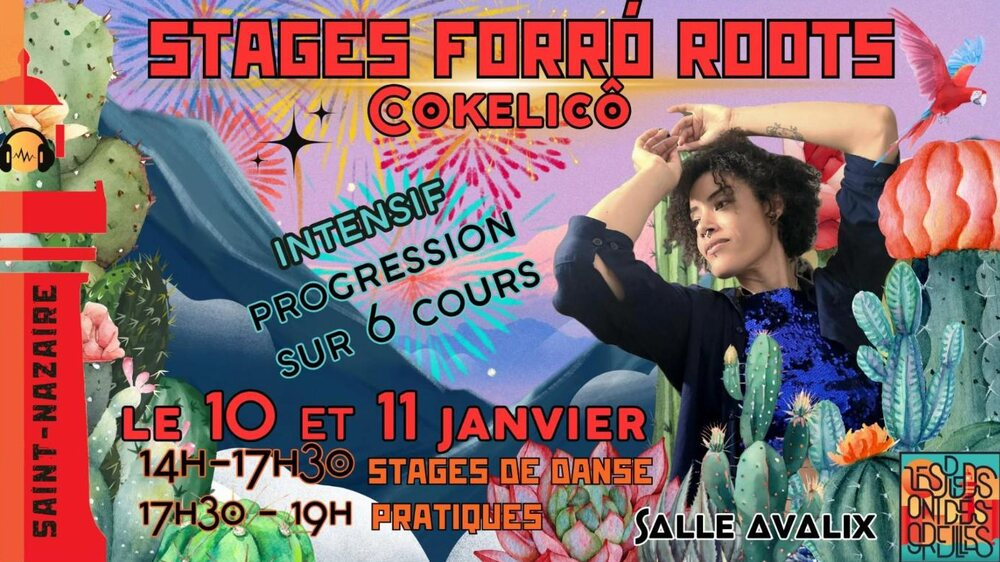

Stages forró roots intensifs avec Cokelicô

Lieu : Salle Avalix, 3 rue du Docteur Calmette, Saint-Nazaire
Intensif de progression sur 6 cours d'une heure : l'essence du forró roots (connexion, équilibre, musicalité) et une vraie autonomie en bal.
Samedi 10 janvier : corps roots et musicalité, connexion roots, équilibre et mouvement, pratique libre guidée.
Dimanche 11 janvier : footwork roots, routine roots et créativité, pratique libre guidée.
En participant aux stages, vous devenez adhérent·e de l'association Les Pieds Ont Des Oreilles.